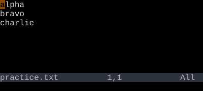
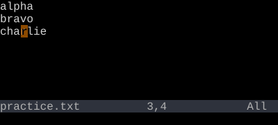

Move with hjkl
h left, j down, k up, l right — without leaving home row
h j k l move the cursor one cell at a time. Hands stay on the home row. Arrow keys also work but defeat the purpose.
Four keys to move the cursor one cell at a time:
| Key | Direction | Mnemonic |
|---|---|---|
| h | Left | h is on the left of the home row |
| j | Down | j has a hook that points down |
| k | Up | k is right next to j; the one above |
| l | Right | l is the last of the four |
Counts work: 5j moves down five lines, 10l moves right ten characters.
Why not arrow keys?
The arrow keys also work. Vim accepts them. But they live a few inches away from the home row. Every time your fingers leave home row, you spend a beat finding it again. Over a day of editing, those beats add up.
More importantly, hjkl are right under your fingers when you are about to issue a command. dj deletes a line down. y5k yanks five lines up. The cursor keys can't combine like this — they aren't part of the grammar.
Reference
| Key | Action |
|---|---|
| h | One character left |
| j | One line down |
| k | One line up |
| l | One character right |
| {n}j | n lines down (etc.) |
| Backspace | One character left, wrapping to previous line at column 0 |
| Space | One character right, wrapping to next line at end of line |
| gj, gk | By visual line — useful when wrap is on (deeper dive in wider-motions.line-start) |
Worked example — h j k l
Move without leaving home row.



See also: Word Motions, Line Motions, File Motions, WORD Motions